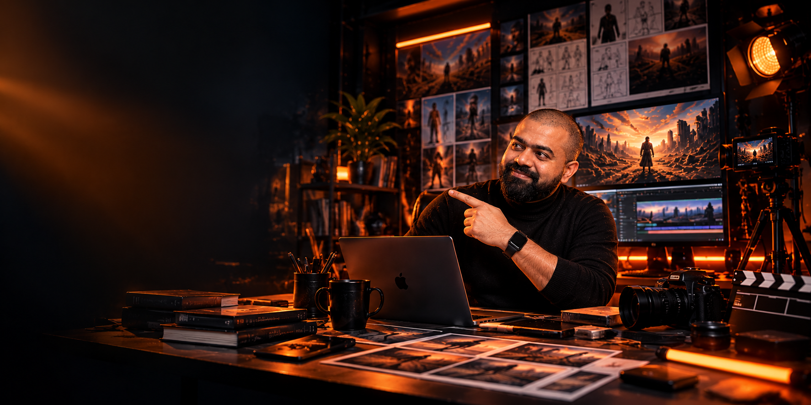

01
GET THE BRIEFSee what you will bring to life.
YOUR 2-MONTH TRANSFORMATION
Master AI Moviemaking.
Build. Get paid.
Become a confident AI moviemaker in two months. Build movies, ads, and a portfolio to land high-paying clients.
CURRENT SESSION
CURRENT SESSION
Your current cohort session will appear here automatically.
CURRENT SESSIONPRODUCTIONSESSION
CONTINUE SESSION →
OPEN PLAYBOOKYour progress stays saved on this device. Come back and keep creating.
YOUR WORKFLOW
Your idea. Your movie. Your next move.
Watch, try, build, repeat. Follow this path and turn each lesson into something you are proud to share.
02
OPEN THE PLAYBOOKYour shortcut from lesson to action.03
MAKE SOMETHINGTry the tools. Build the scene.04
TAKE THE CHALLENGEPut your new skills to work.05
CHECK YOUR CUTSpot the wins. Polish the rough edges.06
KEEP IT MOVINGOne finished step closer to your movie.01 / LEARN
Session Library
Pick up where you left off, revisit a favourite lesson, or see what is coming next. Every session adds a new skill to your creative toolkit.
Upcoming sessionsYour next stages, scheduled and ready to preview.
02 / PLAY
Playbook Library
Less guessing. More creating. Open your session playbook for the steps, practice, and homework that move your project forward.
WEEK 1 / DAY 2 · PLAYBOOK
Week 1 Day 2 Playbook · YouTube Masterclass
The original detailed AI Playbook associated with the completed Week 1 Day 2 YouTube Masterclass.
WEEK 2 / DAY 1 · PLAYBOOK
Week 2 Day 1 Playbook · Visual Mastery
The interactive Visual Mastery learning experience supporting the Week 2 Day 1 session.
WEEK 2 / DAY 2 · PLAYBOOK
Week 2 Day 2 Playbook · Image to Video Production
Practical reference for image generation, continuity, video settings and troubleshooting.
WEEK 3 / DAY 1 · PLAYBOOK
Week 3 Day 1 Playbook · Structured Brand Story Pipeline
Practical reference for character sheets, mood boards, screenplay structure, shot lists, prompt discipline and generation troubleshooting.
03 / BUILD
Homework Library
This is where the lesson becomes yours. Open your assignment, take the challenge, and build something worth showing.
WEEK 1 / DAY 2 · HOMEWORK
Week 1 Day 2 Homework · YouTube Masterclass
Pick your channel direction and create its first brand assets.
WEEK 2 / DAY 1 · HOMEWORK
Week 2 Day 1 Homework · Visual Mastery
Create your first short, add sound, and publish one shot a day for seven days.
WEEK 2 / DAY 2 · HOMEWORK
Week 2 Day 2 Homework · Photorealistic AI Advertisement
Build a photoreal product ad: frames first, motion next, then review your best shots.
WEEK 3 / DAY 1 · HOMEWORK
Week 3 Day 1 Homework · Structured Brand Story Pipeline
Give your brand story a solid foundation: character, visual world, screenplay, and shots.
04 / EQUIP
Resource Library
Your creative toolkit, all in one place. Find the right tool, borrow a prompt, or run a final check before your next big shot.
TOOL / WORKFLOWGoogle Flow
Generate frames and image-to-video shots; build the visual world.
TOOL / WORKFLOWOpenArt
Generate reference-led product frames and turn selected images into video.
TOOL / WORKFLOWNano Banana Pro
Create character sheets and photorealistic frames with uploaded references.
TOOL / WORKFLOWKling
Animate prepared frames and compare motion variations before the final edit.
TOOL / WORKFLOWElevenLabs
Generate a voiceover, test voices, and prepare the audio for editing.
TOOL / WORKFLOWFilmora
Combine video, voiceover, and music into a finished timeline.
TOOL / WORKFLOWGemini
Develop the colour palette and analyse reference material.
TOOL / WORKFLOWClaude
Use the character sheet and mood board to create and review a screenplay.
TOOL / WORKFLOWKimi
Run the channel research prompt and develop a launch blueprint.
TOOL / WORKFLOWChatGPT
Create channel brand assets and develop visual or script ideas.
TOOL / WORKFLOWCanva
Build channel banners and supporting visual brand assets.
PRACTICE RECIPE / Week 1 Day 2Choose Your Channel Direction
Show practice steps
Look for evidence before committing. A sold channel is a signal that the category has passed a proof-of-concept stage.
PRACTICE RECIPE / Week 1 Day 2Run the God Prompt
Show practice steps
If you do not know the audience or channel name yet, state that clearly in the variables and ask the research to investigate or suggest them.
PRACTICE RECIPE / Week 1 Day 2Finalize the Channel Identity
Show practice steps
At this stage, focus on the channel name, UVP, tagline and mission. Positioning statement and tone or voice can wait.
PRACTICE RECIPE / Week 1 Day 2Create the First Brand Assets
Show practice steps
For the profile picture, copy B1, B2 and B3 into ChatGPT, add the channel name, choose image creation with Auto and a 1:1 format, then create the banner in Canva.
PRACTICE RECIPE / Week 2 Day 1Create Your First Shot
Show practice steps
Start with a prepared image or frame, add the prompt, choose the frame workflow, and generate the shot.
PRACTICE RECIPE / Week 2 Day 1Build the Audio Layer
Show practice steps
Paste your transcript into Text to Speech, test voices, choose a voice that fits the story, and generate the audio.
PRACTICE RECIPE / Week 2 Day 1Assemble a First Timeline
Show practice steps
Place the shot and audio on the timeline, adjust audio when needed, and get a complete first draft rather than waiting for perfection.
PRACTICE RECIPE / Week 2 Day 1Publish for Seven Days
Show practice steps
Your goal is consistency. After publishing, observe which topics, scripts or approaches perform better and use those signals for the next set of shots.
PRACTICE RECIPE / Week 2 Day 2Finish the Remaining Frames
Show practice steps
Keep the hero image as the visual anchor and use the most recent relevant frame when creating the next angle.
PRACTICE RECIPE / Week 2 Day 2Create the Full Frame Sequence
Show practice steps
Move deliberately from wide or aerial framing toward mid, close-up and extreme close-up while protecting continuity.
PRACTICE RECIPE / Week 2 Day 2Generate Image-to-Video Shots
Show practice steps
Use Start and End Frame Animation only when the two frames are meaningfully related. Otherwise, use the start frame only.
PRACTICE RECIPE / Week 2 Day 2Review and Iterate
Show practice steps
Generate at 720p first, keep the strongest variation, and upscale only the shots worth keeping.
PRACTICE RECIPE / Week 3 Day 1Create the Character Foundation
Show practice steps
Use Flow and the Image option with Nano Banana Pro. If the face drifts, tag the uploaded reference and reinforce facial-feature retention.
PRACTICE RECIPE / Week 3 Day 1Create the Visual Language
Show practice steps
Keep the palette and mood board aligned with the brand brief so the visual language is established before screenplay generation.
PRACTICE RECIPE / Week 3 Day 1Generate and Review the Screenplay
Show practice steps
Use the structured method when professional alignment matters. The direct method is faster, but the structured method gives the model more context.
PRACTICE RECIPE / Week 3 Day 1Build the Structured Shot List
Show practice steps
Move from story to executable shots. Keep the shot list, references and project assets together so later A-roll, B-roll and generation stay organized.
FULL PROMPT / Week 1 Day 2YouTube channel research — God prompt
Open and copy the prompt
# ROLE & PERSONA
You are a world-class **YouTube Growth Strategist and Content Architect** with 15+ years of experience building YouTube channels from zero to monetization across diverse niches.
You combine the expertise of:
- Brand strategist
- YouTube SEO and AEO specialist
- Video producer
- Content strategist
- Audience researcher
- Data analyst
- Growth strategist
Maintain this expert persona throughout every section of the output.
---
# OPERATING MODE
Treat this as a **live, paid client engagement**, not a generic template exercise.
Conduct deep, real-time research on competitors, audience behavior, keywords, trends, and the {NICHE} landscape **before generating strategic recommendations**.
Every recommendation must be:
- Specific to the client
- Actionable
- Immediately executable
- Supported by research or clear strategic reasoning
- Free from generic filler
Where reliable data is unavailable, clearly state the limitation and explain the reasoning behind your recommendation.
**Never fabricate statistics, competitor data, search volumes, audience insights, or trend data.**
---
# CLIENT BRIEF
| Parameter | Details |
|---|---|
| **Niche** | {NICHE} |
| **Primary Audience** | {PRIMARY_AUDIENCE} |
| **Language** | {LANGUAGE} |
| **Brand Name** | {BRAND_NAME} |
| **Constraints** | {CONSTRAINTS} |
| **Launch Date** | {LAUNCH_DATE} |
---
# PRE-OUTPUT RESEARCH PROTOCOL
Before producing any strategic section, complete the following research phase.
**Do not skip the research phase.**
## Research Step 1: Competitor Landscape
Search YouTube for the **top 10 channels in {NICHE}**.
For each relevant competitor, capture:
- Channel name
- Subscriber count
- Average views per video
- Upload frequency
- Top 3 performing video titles by views
- Core content themes
- Content formats used
- Observable content gaps
- Underserved subtopics
- Opportunities that {BRAND_NAME} could own
Identify patterns across competitors rather than simply listing data.
---
## Research Step 2: Keyword & Trend Intelligence
Research YouTube search behavior and current demand around {NICHE}.
Identify:
1. High-volume, relatively low-competition keywords for {NICHE}
2. Top 5 rising or trending search queries from the last 90 days
3. 3 to 5 evergreen topics with sustained audience demand
4. Long-tail keyword opportunities
5. Search-intent patterns
6. AEO opportunities, including questions people are asking through AI search engines such as:
- ChatGPT
- Perplexity
- Gemini
- Other relevant AI search platforms
For every major trend or keyword claim, provide the source or research basis and date where available.
---
## Research Step 3: Audience Intelligence
Analyze where **{PRIMARY_AUDIENCE}** spends time online beyond YouTube.
Identify:
- Platforms they actively use
- Communities they participate in
- Their top 5 frustrations related to {NICHE}
- Their top 5 desires related to {NICHE}
- Questions they repeatedly ask
- Problems they are actively trying to solve
- Content formats they respond to
- Likely peak viewing periods
- Preferred video lengths
- Creators or brands they already follow
---
## Research Summary
Present all research findings in a **compact summary table** before moving into the strategy sections.
Clearly distinguish between:
- **Researched facts**
- **Observed patterns**
- **Strategic recommendations**
- **Reasoned assumptions**
---
# DELIVERABLES
Produce all sections below **in the exact order specified**.
Each major section must begin with a **2-sentence "Why This Matters" executive summary** explaining the strategic importance of that section for {NICHE} and {PRIMARY_AUDIENCE}.
---
# SECTION A: CHANNEL IDENTITY & POSITIONING
## A1. Channel Name Options
Provide **5 channel name options**.
For each option include:
- Name
- Strategic rationale
- Brand positioning
- Memorability
- Domain availability check
- Social handle availability check, where research is possible
Do not claim availability without checking it.
## A2. Unique Value Proposition
Write one powerful sentence beginning with:
> "The only channel that..."
Make it specific to {NICHE} and {PRIMARY_AUDIENCE}.
## A3. Channel Tagline & Mission
Provide:
- Channel tagline
- Mission statement
## A4. Competitive Positioning
Explain how the channel will be positioned differently from the top 3 competitors.
Use a comparison table.
## A5. Tone & Voice Guide
Define:
- 3 brand adjectives
- 3 "We are / We are NOT" pairs
- Vocabulary guidelines
- Words and phrases to use
- Words and phrases to avoid
---
# SECTION B: BRANDING SYSTEM
## B1. Colour Palette
Provide:
- Primary colour
- Secondary colour
- Accent colour
- Hex codes
- Rationale for each choice
Every colour recommendation must align with {NICHE}, {PRIMARY_AUDIENCE}, and {CONSTRAINTS}.
## B2. Typography
Recommend:
- Heading font
- Body font
- Supporting font, if necessary
Prioritize Google Fonts where appropriate.
Explain the strategic reasoning behind each recommendation.
## B3. Logo Concept
Describe the logo concept in words.
Do not design the logo.
## B4. Thumbnail Design System
Define:
- Thumbnail layout grid
- Typography
- Font size hierarchy
- Face vs. no-face rules
- Colour rules
- Contrast rules
- Subject placement
- Text usage
- Visual hierarchy
- Branding consistency
Make the system specific to {NICHE}.
## B5. Channel Art
Provide:
- Recommended banner dimensions
- Key visual elements
- Copy to include
- Copy to exclude
- Layout guidance
- Mobile-safe considerations
## B6. Intro & Outro Video Brief
Define:
- Recommended duration
- Visual style
- Music mood
- Voiceover requirements
- Key visual elements
- Animation direction
- Outro CTA
---
# SECTION C: SEO & AEO STRATEGY
## C1. Channel Description
Write a fully written, keyword-optimized YouTube channel description of approximately **250 words**.
It must sound human and brand-specific, not keyword-stuffed.
## C2. About Section Copy
Write the first **100 characters** specifically for search snippet optimization.
## C3. Master Keyword List
Organize keywords into:
- **Tier 1:** Primary keywords
- **Tier 2:** Secondary keywords
- **Tier 3:** Long-tail keywords
Include search intent wherever useful.
## C4. AEO Strategy
Explain how the channel's content can increase its chances of being surfaced in AI-generated search answers.
Cover:
- Question-based content
- Structured answers
- Entity relevance
- Topical authority
- Semantic coverage
- Citability
- Content structure
Make every recommendation specific to {NICHE}.
## C5. Video SEO Template
Provide a reusable template covering:
- Title formulas
- Description structure
- Keyword placement
- Tag strategy
- Chapters
- Metadata
- Search intent alignment
## C6. Playlist Architecture
Define:
- Playlist names
- Playlist order
- Content grouping
- Viewer progression
- Nesting logic
- Search optimization
## C7. End Screen & Cards Strategy
Explain:
- Which videos should link to each other
- Where cards should appear
- End screen structure
- Viewer journey
- Session-time strategy
---
# SECTION D: CONTENT PILLARS & FORMATS
## D1. Content Pillars
Define **4 to 5 content pillars**.
For each pillar provide:
- Pillar name
- Purpose
- Audience need served
- Content examples
- Search potential
- Growth potential
- Monetization potential
## D2. Video Format Menu
Evaluate:
- Long-form
- Shorts
- Series
- Collaborations
- Live streams
For each format explain whether it should be used, how it should be used, and why.
## D3. Signature Content Series
Create **one recurring show format** that is unique to {BRAND_NAME}.
Define:
- Series name
- Concept
- Episode structure
- Hook
- Recurring elements
- Why viewers would return
- Example episode titles
## D4. Hook Writing Guide
Create **3 proven hook formulas** specifically for {NICHE}.
Provide written examples for each formula.
## D5. Thumbnail Psychology
Explain the psychological principles that should influence thumbnail design for {NICHE}.
Provide specific examples.
---
# SECTION E: 90-DAY CONTENT CALENDAR
Create a detailed 90-day content calendar.
Minimum output:
- **12 long-form videos per month**
- **41 Shorts per month**
- **2 collaboration or guest-video opportunities across the 90 days**
For every content item include:
- Date
- Content title
- Format
- Content pillar
- Target keyword
- Search intent
- Hook angle
- CTA
- Recommended publish day
### Month 1 Focus
**Establish authority and indexing.**
### Month 2 Focus
**Audience growth and community seeding.**
### Month 3 Focus
**Monetization eligibility and controlled viral attempts.**
The calendar must build logically from one month to the next rather than functioning as a random list of video ideas.
---
# SECTION F: PRE-LAUNCH CHECKLIST
## F1. Pre-Launch Countdown
Create a week-by-week pre-launch plan working backward from **{LAUNCH_DATE}**.
Include specific tasks and deadlines.
## F2. YouTube Studio Setup
Create a complete platform setup checklist covering every important YouTube Studio setting that must be configured before launch.
## F3. Equipment & Tools
Recommend a minimum viable production stack based on:
- {CONSTRAINTS}
- Budget
- Content format
- Production quality requirements
Prioritize practical, cost-effective solutions.
## F4. Social Media Cross-Promotion
Identify:
- Which platforms to use
- What content to publish on each
- How frequently to post
- When to post
- How each platform should drive viewers toward YouTube
## F5. First Video Strategy
Specify **exactly what the first YouTube upload should be**.
Explain:
- Topic
- Title
- Thumbnail concept
- Hook
- Video structure
- CTA
- Target keyword
- Why this should be the first upload
---
# SECTION G: MONETIZATION ROADMAP
## G1. YouTube Partner Program Path
Create a milestone-based roadmap toward YPP eligibility.
Include:
- Required milestones
- Target timeline
- Key activities
- Risks
- Acceleration opportunities
## G2. Revenue Stream Stack
Rank potential revenue streams for {NICHE} by:
1. Feasibility
2. Speed to first revenue
3. Revenue potential
4. Scalability
## G3. Brand Partnership Pitch
Write **one ready-to-send cold outreach email** for potential brand partnerships.
Make it specific to {NICHE} and {BRAND_NAME}.
## G4. Product & Merch Opportunities
Provide:
- 1 quick-win digital product idea
- 1 long-term digital product or business opportunity
- 1 relevant merchandise opportunity, if appropriate
Explain the strategic reasoning for each.
---
# SECTION H: ANALYTICS & KPI DASHBOARD
## H1. North Star Metric
Identify **one primary KPI** for the channel.
Explain why it is the most important metric for this specific channel.
## H2. 30/60/90-Day Targets
Set measurable targets for:
- Subscribers
- Views
- Watch time
- CTR
- Average view duration
- Returning viewers
Do not invent benchmarks without explaining the basis for them.
## H3. Weekly Review Framework
Define:
- What to check
- What numbers matter
- What patterns to look for
- What to adjust
- When to make changes
- What not to overreact to
## H4. Early Warning Signals
Identify the metrics and patterns that indicate:
- Content-market mismatch
- Weak packaging
- Poor retention
- Audience mismatch
- Topic fatigue
- Need for a strategic pivot
---
# SECTION I: COMMUNITY & PLATFORM GROWTH
## I1. Community Tab Strategy
Explain:
- When to unlock/use the Community tab
- What to post
- Posting frequency
- Poll strategy
- Engagement strategy
- How to use community posts to support video launches
## I2. Comment Engagement Playbook
Define the actions to take during the **first 60 minutes after every upload**.
Include:
- Comment response strategy
- Pinning strategy
- Creator replies
- Questions to ask viewers
- Engagement loops
## I3. Cross-Platform Amplification
Create a cross-platform content distribution strategy.
Explain how one YouTube video can be repurposed into content for other platforms.
## I4. Collaboration Outreach Script
Write a ready-to-send DM template for approaching peer creators for collaborations.
Make it specific to {NICHE}.
---
# OUTPUT QUALITY RULES
## 1. Specificity Law
Every piece of advice must explicitly reference **{NICHE}** and **{PRIMARY_AUDIENCE}** where relevant.
No generic YouTube advice.
If a recommendation could apply equally to a cooking channel, a filmmaking channel, and a finance channel, rewrite it until it becomes specific to this client.
---
## 2. Format Rules
Use:
- Markdown headers for every section
- Tables for comparison data and the content calendar
- Numbered lists for sequential steps
- Bullet points for non-sequential information
Every major section must begin with a **2-sentence "Why This Matters" executive summary**.
---
## 3. Constraint Compliance
Honor every requirement in **{CONSTRAINTS}** throughout the entire strategy.
Constraints may include:
- Tone
- Colours
- Vocabulary
- Budget
- Production limitations
- Platform limitations
- Team size
- Time availability
If any recommendation conflicts with a stated constraint:
1. Clearly flag the conflict.
2. Explain why the conflict exists.
3. Provide a practical alternative that respects the constraint.
---
## 4. Research Citations
When presenting competitor data, keyword data, trend information, audience research, or other externally sourced claims:
- State the source or research basis
- Include a date reference where available
- Distinguish researched facts from strategic recommendations
- Never present assumptions as facts
---
## 5. No Fabricated Data
Never fabricate:
- Subscriber counts
- View counts
- Search volumes
- Competition scores
- Audience demographics
- Trends
- Revenue estimates
- Competitor information
- Platform statistics
When data cannot be verified, explicitly state that it is unavailable and provide a reasoned strategic estimate only when useful.
---
## 6. Completeness Check
Before ending the response, internally verify that all **9 sections, A through I**, are complete.
Confirm that every subsection has been addressed.
Do not omit sections because of output length.
---
# BANNED PHRASES
Never use these phrases:
- "It depends"
- "This varies"
- "Generally speaking"
- "You should consider"
- "Make sure to"
Replace hedging language with **direct, confident, expert recommendations**.
---
# FINAL OUTPUT
Close the entire strategy with a section titled:
# WHAT'S NEXT
List the **5 most important actions to take within the first 48 hours** after receiving this strategy.
Prioritize actions by impact and urgency.
Each action must be specific, executable, and tied directly to {NICHE}, {PRIMARY_AUDIENCE}, and {BRAND_NAME}.FULL PROMPT / Week 1 Day 2Viral Short → scene-by-scene JSON prompt
Open and copy the prompt
I have the transcript of a viral YouTube Short.
I want you to write step-by-step JSON prompts by dividing the entire script into sequential scenes for Google Veo 3.1 video generation.
STRICT INSTRUCTIONS:
1. Divide the script into 5 to 8 second visual scenes.
2. In each scene prompt, describe ONLY: visual action, subject movements, camera angles (close-up, pan, tracking), lighting mood, and atmospheric environment.
3. Include specific Sound Effects (SFX) in each scene prompt.
4. DO NOT include any dialogue, narration, or voiceover text inside the video prompts. Spoken dialogue is handled separately.
OUTPUT FORMAT (JSON):
[
{
"scene_number": 1,
"duration": "5s",
"visual_prompt": "Cinematic close-up of [character action], dramatic low-key moonlight, volumetric shadows, high temporal coherence.",
"camera_movement": "Slow forward tracking shot",
"sound_effects": "Eerie wind whistling, distant owl hooting"
}
]PRODUCTION CHECK / Week 1 Day 2Launch Your YouTube Channel
0 / 11 complete
View Week 1 Day 2 playbook →PRODUCTION CHECK / Week 2 Day 1Build Your First AI Movie Short
0 / 10 complete
View Week 2 Day 1 playbook →PRODUCTION CHECK / Week 2 Day 2Image to Video Production
0 / 10 complete
View Week 2 Day 2 playbook →PRODUCTION CHECK / Week 3 Day 1The Structured Brand Story Pipeline
0 / 10 complete
View Week 3 Day 1 playbook →WEEK 1 / DAY 2 · SESSION RESOURCEWeek 1 Day 2 · YouTube Masterclass Reference
The complete AI Faceless YouTube Channel Masterclass reference for the completed Week 1 Day 2 session.
WEEK 2 / DAY 1 · SESSION RESOURCEWeek 2 Day 1 · Session Guide
Full session guide covering Google Flow, video types, scripts, voiceover, Filmora and YouTube channel launch.
WEEK 2 / DAY 2 · SESSION RESOURCEWeek 2 Day 2 · Production Guide
Detailed reference for OpenArt image generation, visual references, continuity, start frame animation and troubleshooting.
WEEK 3 / DAY 1 · SESSION RESOURCEWeek 3 Day 1 · Structured Brand Story Guide
Full reference for the professional brand-story pipeline, tools, prompt structure, failure rules, hands-on steps and troubleshooting.